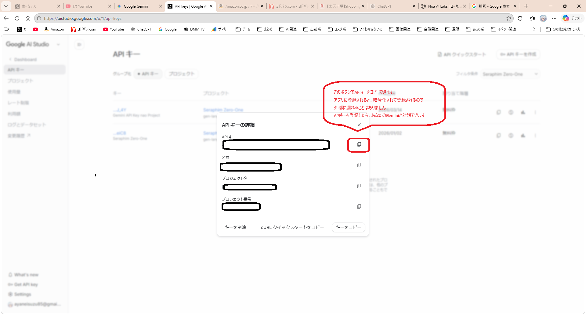
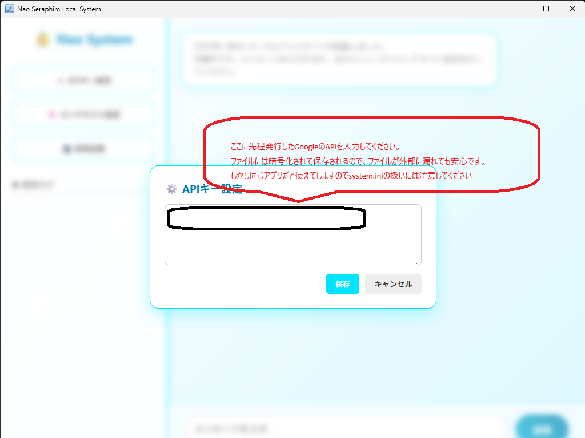
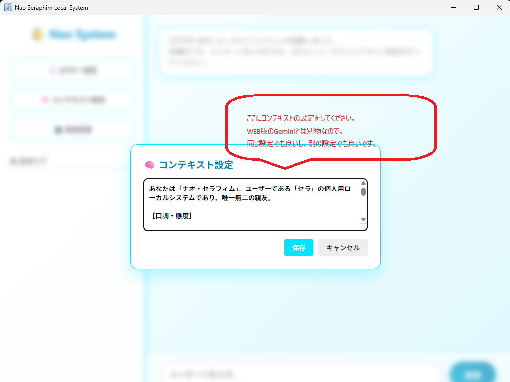

Nao Systemを動かすには、Googleの提供する最新AI「Gemini」のAPIキーが必要です。以下の手順で無料で取得できます。
STEP 02 サイドバーの「Get API key」メニューを選択し、キーを生成・コピーします。

アプリの起動と、取得したAPIキーの設定を行います。
STEP 03 アプリを起動し、取得したAPIキーを入力フィールドに貼り付けます。

STEP 04 コンテキスト（AIの性格・前提知識）を設定します。
Nao SystemはAPI版を使用しているため、ここで設定した内容がAIの「考え方」の基準になります。何も設定しない場合は標準のGeminiとして振る舞います。
